basic_tutorial.RmdThis tutorial covers the basics of using hdWGCNA to perform co-expression network analysis on single-cell data. Here, we demonstrate hdWGCNA using a processed single-nucleus RNA-seq (snRNA-seq) dataset of human cortical samples from this publication. This dataset has already been fully processed using a standard single-cell transcritpomics analysis pipeline such as Seurat or Scanpy. If you would like to follow this tutorial using your own dataset, you first need to satisfy the following prerequisites:
An example of running the prerequisite data processing steps can be found in the Seurat Guided Clustering Tutorial.
Additionally, there are a lot of WGCNA-specific terminology and acronyms, which are all clarified in this table.
For the purpose of this tutorial, we provide a processed Seurat object of the control human brains from the Zhou et al 2020 study.
wget https://swaruplab.bio.uci.edu/public_data/Zhou_2020.rdsFirst we will load the single-cell dataset and the required R libraries for this tutorial.
# single-cell analysis package
library(Seurat)
# plotting and data science packages
library(tidyverse)
library(cowplot)
library(patchwork)
# co-expression network analysis packages:
library(WGCNA)
library(hdWGCNA)
# using the cowplot theme for ggplot
theme_set(theme_cowplot())
# set random seed for reproducibility
set.seed(12345)
# load the Zhou et al snRNA-seq dataset
seurat_obj <- readRDS('Zhou_2020.rds')Here we will plot the UMAP colored by cell type just to check that we have loaded the data correctly, and to make sure that we have grouped cells into clusters and cell types.
p <- DimPlot(seurat_obj, group.by='cell_type', label=TRUE) +
umap_theme() + ggtitle('Zhou et al Control Cortex') + NoLegend()
p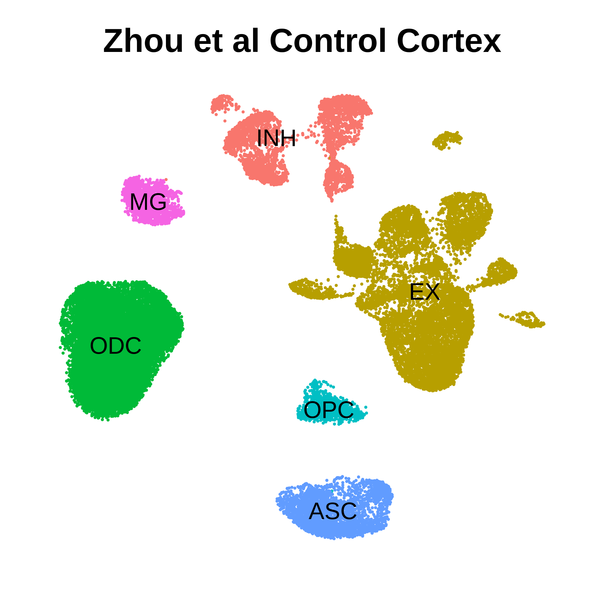
Before running hdWGCNA, we first have to set up the Seurat object. Most of the information computed by hdWGCNA is stored in the Seurat object’s @misc slot. A single Seurat object can hold multiple hdWGCNA experiments, for example representing different cell types in the same single-cell dataset. Notably, since we consider hdWGCNA to be a downstream data analysis step, we do not support subsetting the Seurat object after SetupForWGCNA has been run.
Here we will set up the Seurat object using the SetupForWGCNA function, specifying the name of the scWGNCA experiment. This function also selects the genes that will be used for WGCNA. The user can select genes using three different approaches using the gene_select parameter:
variable: use the genes stored in the Seurat object’s VariableFeatures.fraction: use genes that are expressed in a certain fraction of cells for in the whole dataset or in each group of cells, specified by group.by.custom: use genes that are specified in a custom list.In this example, we will select genes that are expressed in at least 5% of cells in this dataset, and we will name our hdWGCNA experiment “tutorial”.
seurat_obj <- SetupForWGCNA(
seurat_obj,
gene_select = "fraction", # the gene selection approach
fraction = 0.05, # fraction of cells that a gene needs to be expressed in order to be included
wgcna_name = "tutorial" # the name of the hdWGCNA experiment
)After we have set up our Seurat object, the first step in running the scWGCNA pipeine in hdWGCNA is to construct metacells from the single-cell dataset. Briefly, metacells are aggregates of small groups of similar cells originating from the same biological sample of origin. The k-Nearest Neighbors (KNN) algorithm is used to identify groups of similar cells to aggregate, and then the average expression is computed, thus yielding a metacell gene expression matrix. The sparsity of the metacell expression matrix is considerably reduced when compared to the original expression matrix, and therefore it is preferable to use. We were originally motivated to use metacells in place of the original single cells because correlation network approaches such as WGCNA are sensitive to data sparsity. Furthermore, single-cell epigenomic approaches, such as Cicero, employ a similar metacell aggregation approach prior to constructing co-accessibility networks.
hdWGCNA includes a function MetacellsByGroups to construct metacell expression matrices given a single-cell dataset. This function constructs a new Seurat object which is stored internally in the hdWGCNA experiment. The group.by parameter determines which groups metacells will be constructed in. We only want to construct metacells from cells that came from the same biological sample of origin, so it is critical to pass that information to hdWGCNA via the group.by parameter. Additionally, we usually construct metacells for each cell type separately. Thus, in this example, we are grouping by Sample and cell_type to achieve the desired result.
The number of cells to be aggregated k should be tuned based on the size of the input dataset, in general a lower number for k can be used for small datasets. We generally use k values between 20 and 75. The dataset used for this tutorial has 40,039 cells, ranging from 890 to 8,188 in each biological sample, and here we used k=25.
Warning: we have found that the metacell aggregation approach does not yield good results for extremely underrepresented cell types. For example, in this dataset, the brain vascular cells (pericytes and endothelial cells) were the least represented, and we have excluded them from this analysis.
Here we construct metacells and normalize the resulting expression matrix using the following code:
# construct metacells in each group
seurat_obj <- MetacellsByGroups(
seurat_obj = seurat_obj,
group.by = c("cell_type", "Sample"), # specify the columns in seurat_obj@meta.data to group by
k = 25, # nearest-neighbors parameter
ident.group = 'cell_type' # set the Idents of the metacell seurat object
)
# normalize metacell expression matrix:
seurat_obj <- NormalizeMetacells(seurat_obj)Since we store the Metacell expression information as its own Seurat object, we can run Seurat functions on the metacell data. We can get the metacell object from the hdWGCNA experiment using GetMetacellObject.
metacell_obj <- GetMetacellObject(seurat_obj)Additionally, we have included a few wrapper functions to apply the Seurat workflow to the metacell object within the hdWGCNA experiment. Here we apply these wrapper functions to process the metacell object and visualize the aggregated expression profiles in two dimensions with UMAP.
seurat_obj <- seurat_obj %>%
NormalizeMetacells() %>%
ScaleMetacells(features=VariableFeatures(seurat_obj)) %>%
RunPCAMetacells(features=VariableFeatures(seurat_obj)) %>%
RunHarmonyMetacells(group.by.vars='Sample') %>%
RunUMAPMetacells(reduction='harmony', dims=1:15)
p1 <- DimPlotMetacells(seurat_obj, group.by='cell_type') + umap_theme + ggtitle("Cell Type")
p2 <- DimPlotMetacells(seurat_obj, group.by='Sample') + umap_theme + ggtitle("Sample")
p1 | p2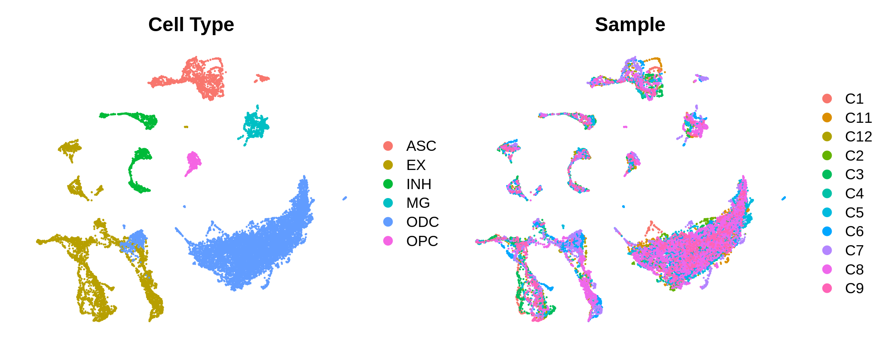
In this section we discuss how to perform co-expression network analysis with scWGNCA on the inhibitory neuron (INH) cells in our example dataset.
Seurat objects stores gene expression matrices such that each row is a gene and each column is a cell. However, WGCNA expects each column to be a gene, thus we have to transpose our expression matrix. Furthermore, for this analysis, we only want to include the inhibitory neurons, so we have to subset our expression data prior to constructing the network. hdWGCNA includes the SetDatExpr function to store the transposed expression matrix for a given group of cells that will be used for downstream network analysis. The metacell expression matrix or the single-cell expression matrix can be used for WGCNA, by default use_metacells=TRUE. This function allows the user to specify which slot to take the expression matrix from, for example if the user wanted to apply SCTransform normalization instead of NormalizeData.
The following code is used to store the transposed metacell expression matrix for the INH cells in our Seurat object:
seurat_obj <- SetDatExpr(
seurat_obj,
group_name = "INH", # the name of the group of interest in the group.by column
group.by='cell_type' # the metadata column containing the cell type info. This same column should have also been used in MetacellsByGroups
)Suppose that you want to perform co-expression network analysis on more than one cell type or cluster simultaneously. SetDatExpr can be run with slighly different settings to achieve the desired result by passing a character vector to the group_name parameter.
seurat_obj <- SetDatExpr(
seurat_obj,
group_name = c("INH", "EX"),
group.by='cell_type'
)Next we will select the “soft power threshold”. This is an extremely important step in the scWGNCA pipleine (and for vanilla WGCNA). Under the hood, WGCNA constructs a correlation adjacency matrix to infer co-expression relationships between genes. The correlations are raised to a power to reduce the amount of noise present in the correlation matrix, thereby retaining the strong connections and removing the weak connections. Therefore, it is critical to determine a proper value for the soft power threshold.
We include a function TestSoftPowers to perform a parameter sweep for different soft power thresholds. This function helps us to guide our choice in a soft power threshold for constructing the co-expression network by inspecting the resulting network topology for different power values. The co-expression network should have a scale-free topology, therefore the TestSoftPowers function models how closely the co-expression network resembles a scale-free graph at different soft power thresholds. Furthermore, we include a function PlotSoftPowers to visualize the results of the parameter sweep.
The following code performs the parameter sweep and outputs a summary figure.
# Test different soft powers:
seurat_obj <- TestSoftPowers(
seurat_obj,
setDatExpr = FALSE, # set this to FALSE since we did this above
)
# plot the results:
plot_list <- PlotSoftPowers(seurat_obj)
# assemble with patchwork
wrap_plots(plot_list, ncol=2)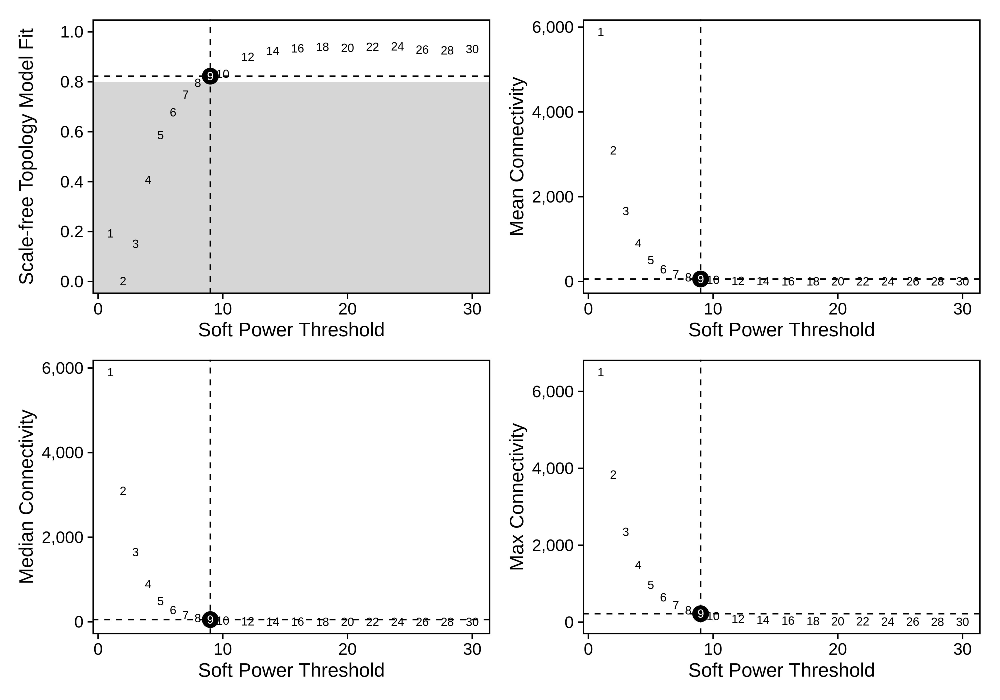
The general guidance for WGCNA and hdWGCNA is to pick the lowest soft power threshold that has a Scale Free Topology Model Fit greater than or equal to 0.8, so in this case we would select our soft power threshold as 9. Later on, the ConstructNetwork will automatically select the soft power threshold if the user does not provide one.
Tthe output table from the parameter sweep is stored in the hdWGCNA experiment and can be accessed using the GetPowerTable function for further inspection:
power_table <- GetPowerTable(seurat_obj)
head(power_table)Power SFT.R.sq slope truncated.R.sq mean.k. median.k. max.k.
1 1 0.192964167 10.1742363 0.9508966 5887.9290 5901.7852 6501.0283
2 2 0.001621749 0.4801145 0.9828730 3092.6379 3092.7878 3835.2202
3 3 0.150812707 -3.2345892 0.9918393 1657.6198 1646.6169 2349.6967
4 4 0.407513393 -4.5383131 0.9898440 905.8402 890.9431 1486.7695
5 5 0.585949838 -4.8303680 0.9917528 504.4288 490.2683 968.1157
6 6 0.677668481 -4.6749295 0.9935437 286.1585 274.3233 646.6741
We now have everything that we need to construct our co-expression network. Here we use the hdWGCNA function ConstructNetwork, which calls the WGCNA function blockwiseConsensusModules under the hood. This function has quite a few parameters to play with if you are an advanced user, but we have selected default parameters that work well with many single-cell datasets. The parameters for blockwiseConsensusModules can be passed directly to ConstructNetwork with the same parameter names.
The following code construtcts the co-expression network using the soft power threshold selected above:
# construct co-expression network:
seurat_obj <- ConstructNetwork(
seurat_obj, soft_power=9,
setDatExpr=FALSE
)hdWGCNA also includes a function PlotDendrogram to visualize the WGCNA dendrogram, a common visualization to show the different co-expression modules resulting from the network analysis. Each leaf on the dendrogram represents a single gene, and the color at the bottom indicates the co-expression module assignment.
PlotDendrogram(seurat_obj, main='INH hdWGCNA Dendrogram')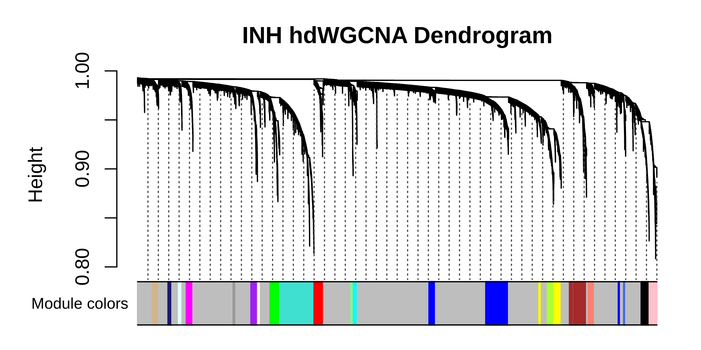
In this section we will cover how to compute module eigengenes in single cells, and how to compute the eigengene-based connectivity for each gene.
Module Eigengenes (MEs) are a commonly used metric to summarize the gene expression profile of an entire co-expression module. Briefly, module eigengenes are computed by performing principal component analysis (PCA) on the subset of the gene expression matrix comprising each module. The first PC of each of these PCA matrices are the MEs.
Dimensionality reduction techniques are a very hot topic in single-cell genomics. It is well known that technical artifacts can muddy the analysis of single-cell datasets, and over the years there have been many methods that aim to reduce the effects of these artifacts. Therefore it stands to reason that MEs would be subject to these technical artifacts as well, and hdWGCNA seeks to alleviate these effects.
hdWGCNA includes a function ModuleEigengenes to compute module eigengenes in single cells. Additionally, we allow the user to apply Harmony batch correction to the MEs, yielding harmonized module eigengenes (hMEs). The following code performs the module eigengene computation harmonizing by the Sample of origin using the group.by.vars parameter.
# need to run ScaleData first or else harmony throws an error:
seurat_obj <- ScaleData(seurat_obj, features=VariableFeatures(seurat_obj))
# compute all MEs in the full single-cell dataset
seurat_obj <- ModuleEigengenes(
seurat_obj,
group.by.vars="Sample"
)The ME matrices are stored as a matrix where each row is a cell and each column is a module. This matrix can be extracted from the Seurat object using the GetMEs function, which retrieves the hMEs by default.
In co-expression network analysis, we often want to focus on the “hub genes”, those which are highly connected within each module. Therefore we wish to determine the eigengene-based connectivity, also known as kME, of each gene. hdWGCNA includes the ModuleConnectivity to compute the kME values in the full single-cell dataset, rather than the metacell dataset. This function essentially computes pairwise correlations between genes and module eigengenes. kME can be computed for all cells in the dataset, but we recommend computing kME in the cell type or group that was previously used to run ConstructNetwork.
# compute eigengene-based connectivity (kME):
seurat_obj <- ModuleConnectivity(
seurat_obj,
group.by = 'cell_type', group_name = 'INH'
)For convenience, we re-name the hdWGCNA modules to indicate that they are from the inhibitory neuron group. More information about renaming modules can be found in the module customization tutorial.
# rename the modules
seurat_obj <- ResetModuleNames(
seurat_obj,
new_name = "INH-M"
)We can visualize the genes in each module ranked by kME using the PlotKMEs function.
# plot genes ranked by kME for each module
p <- PlotKMEs(seurat_obj, ncol=5)
p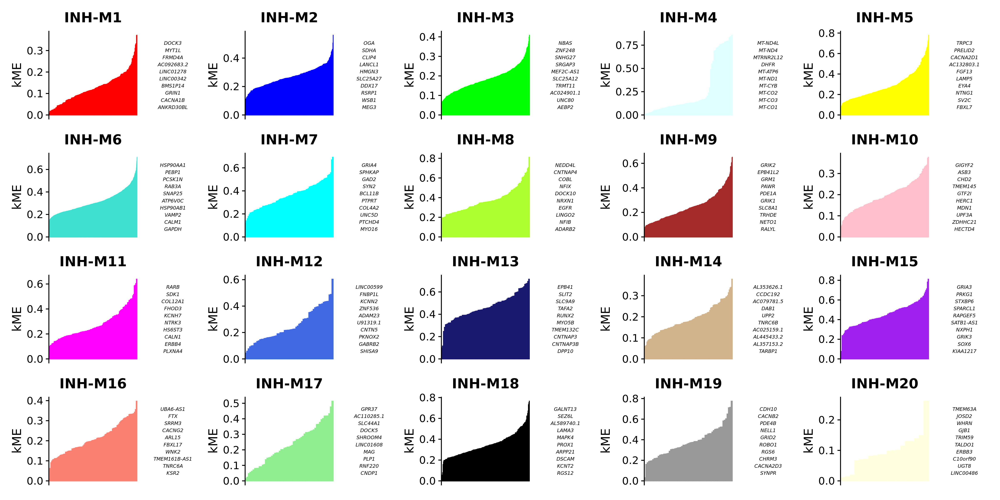
hdWGCNA allows for easy access of the module assignment table using the GetModules function. This table consists of three columns: gene_name stores the gene’s symbol or ID, module stores the gene’s module assignment, and color stores a color mapping for each module, which is used in many downstream plotting steps. If ModuleConnectivity has been called on this hdWGCNA experiment, this table will have additional columns for the kME of each module.
# get the module assignment table:
modules <- GetModules(seurat_obj)
# show the first 6 columns:
head(modules[,1:6])gene_name module color kME_INH-M1 kME_INH-M2 kME_INH-M3
AL627309.1 AL627309.1 grey grey -0.032349090 0.029917426 0.0379323320
LINC01409 LINC01409 INH-M19 brown -0.045140924 -0.013473381 0.0102194168
LINC01128 LINC01128 grey grey 0.050793988 0.109578251 0.1153173093
NOC2L NOC2L grey grey 0.032490535 0.164524557 0.1699131451
AGRN AGRN INH-M19 brown -0.008488577 0.035558532 0.0379326966
C1orf159 C1orf159 grey grey -0.015618737 0.002235229 -0.0003824554
This wraps up the critical analysis steps for hdWGCNA, so remember to save your output.
saveRDS(seurat_obj, file='hdWGCNA_object.rds')Gene scoring analysis is a popular method in single-cell transcriptomics for computing a score for the overall signature of a set of genes. Seurat implements their own gene scoring technique using the AddModuleScore function, but there are also alternative approaches such as UCell. hdWGCNA includes the function ModuleExprScore to compute gene scores for a give number of genes for each module, using either the Seurat or UCell algorithm.
# compute gene scoring for the top 25 hub genes by kME for each module
# with Seurat method
seurat_obj <- ModuleExprScore(
seurat_obj,
n_genes = 25,
method='Seurat'
)
# compute gene scoring for the top 25 hub genes by kME for each module
# with UCell method
library(UCell)
seurat_obj <- ModuleExprScore(
seurat_obj,
n_genes = 25,
method='UCell'
)Here we showcase some of the basic visualization capabilities of hdWGCNA, and we demonstrate how to use some of Seurat’s built-in plotting tools to visualize our hdWGCNA results. Note that we have a separate tutorial for visualization of the hdWGCNA networks.
FeaturePlot is a commonly used Seurat visualization to show a feature of interest directly on the dimensionality reduction. hdWGCNA includes the ModuleFeaturePlot function to consruct FeaturePlots for each co-expression module colored by each module’s uniquely assigned color.
# make a featureplot of hMEs for each module
plot_list <- ModuleFeaturePlot(
seurat_obj,
features='hMEs', # plot the hMEs
order=TRUE # order so the points with highest hMEs are on top
)
# stitch together with patchwork
wrap_plots(plot_list, ncol=6)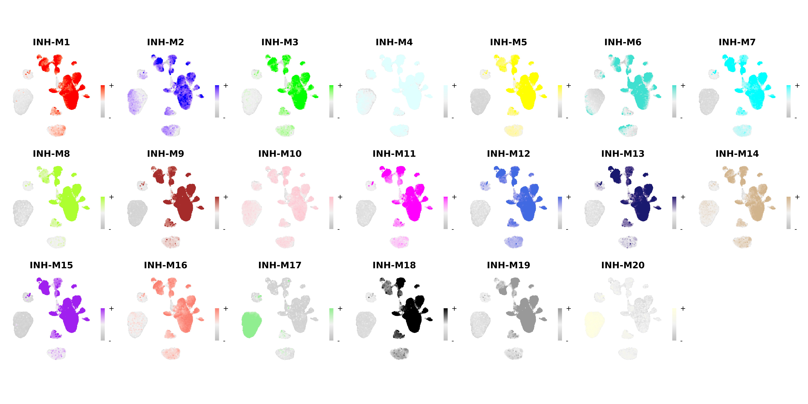
We can also plot the hub gene signature score using the same function:
# make a featureplot of hub scores for each module
plot_list <- ModuleFeaturePlot(
seurat_obj,
features='scores', # plot the hub gene scores
order='shuffle' # order so cells are shuffled
ucell = TRUE # depending on Seurat vs UCell for gene scoring
)
# stitch together with patchwork
wrap_plots(plot_list, ncol=6)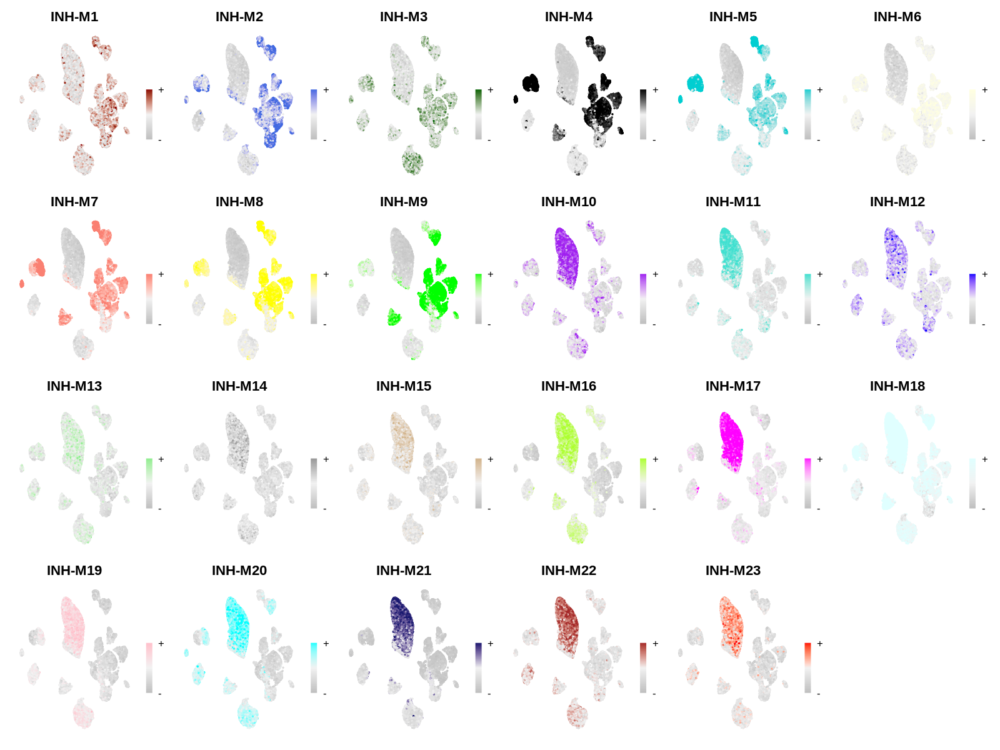
hdWGCNA includes the ModuleCorrelogram function to visualize the correlation between each module based on their hMEs, MEs, or hub gene scores using the R package corrplot.
# plot module correlagram
ModuleCorrelogram(seurat_obj)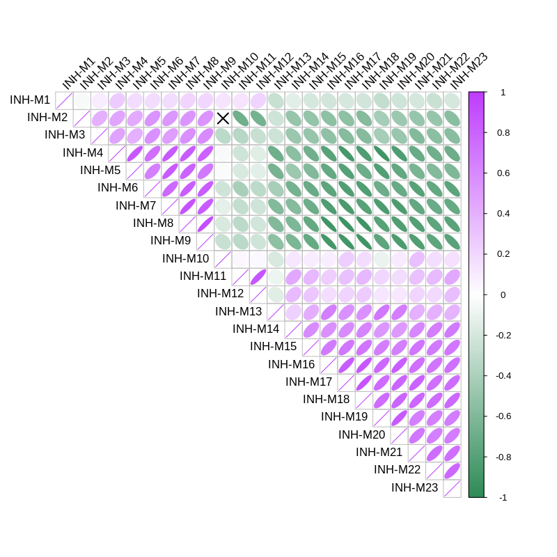
While hdWGCNA includes the ModuleCorrelogram function as shown above, we note that R has a rich ecosystem of statistical analysis tools that can be leveraged to understand the relationship between different modules, and we encourage users to explore their data beyond the functions that we provide here. Here is an example of inspecting the correlation structure of the hMEs using an alternative approach, GGally:
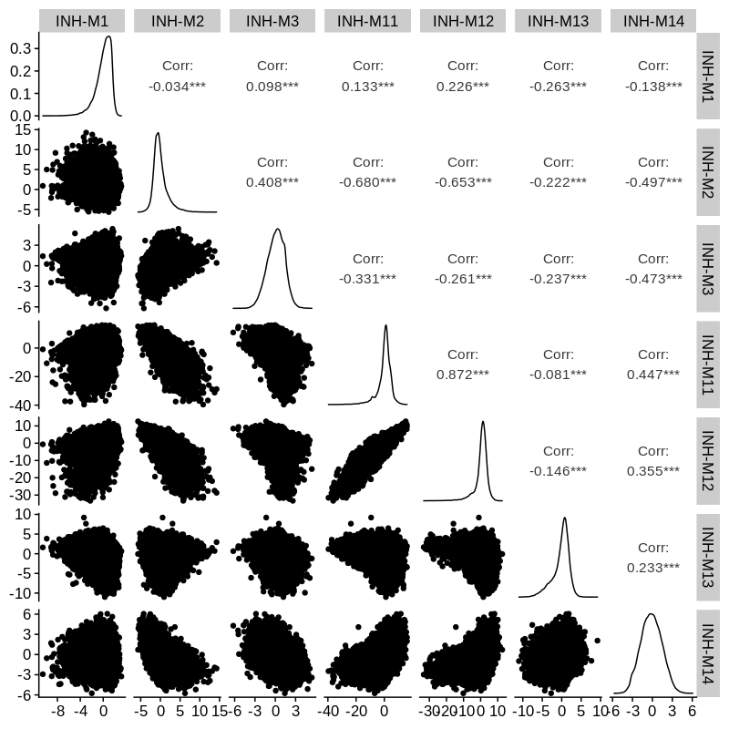
The base Seurat plotting functions are also great for visualizing hdWGCNA outputs. Here we demonstrate plotting hMEs using DotPlot and VlnPlot. The key to using Seurat’s plotting functions to visualize the hdWGCNA data is to add it into the Seurat object’s @meta.data slot:
# get hMEs from seurat object
MEs <- GetMEs(seurat_obj, harmonized=TRUE)
mods <- colnames(MEs); mods <- mods[mods != 'grey']
# add hMEs to Seurat meta-data:
seurat_obj@meta.data <- cbind(seurat_obj@meta.data, MEs)Now we can easily use Seurat’s DotPlot function:
# plot with Seurat's DotPlot function
p <- DotPlot(seurat_obj, mods, group.by = 'cell_type')
# flip the x/y axes, rotate the axis labels, and change color scheme:
p <- p +
coord_flip() +
RotatedAxis() +
scale_color_gradient2(high='red', mid='grey95', low='blue')
# plot output
p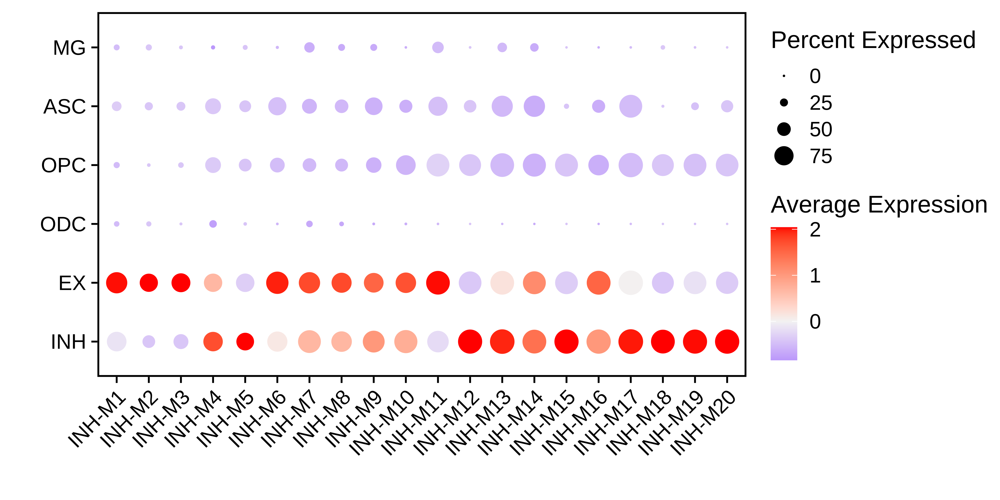
Here is another example where we use Seurat’s VlnPlot function:
# Plot INH-M4 hME using Seurat VlnPlot function
p <- VlnPlot(
seurat_obj,
features = 'INH-M12',
group.by = 'cell_type',
pt.size = 0 # don't show actual data points
)
# add box-and-whisker plots on top:
p <- p + geom_boxplot(width=.25, fill='white')
# change axis labels and remove legend:
p <- p + xlab('') + ylab('hME') + NoLegend()
# plot output
p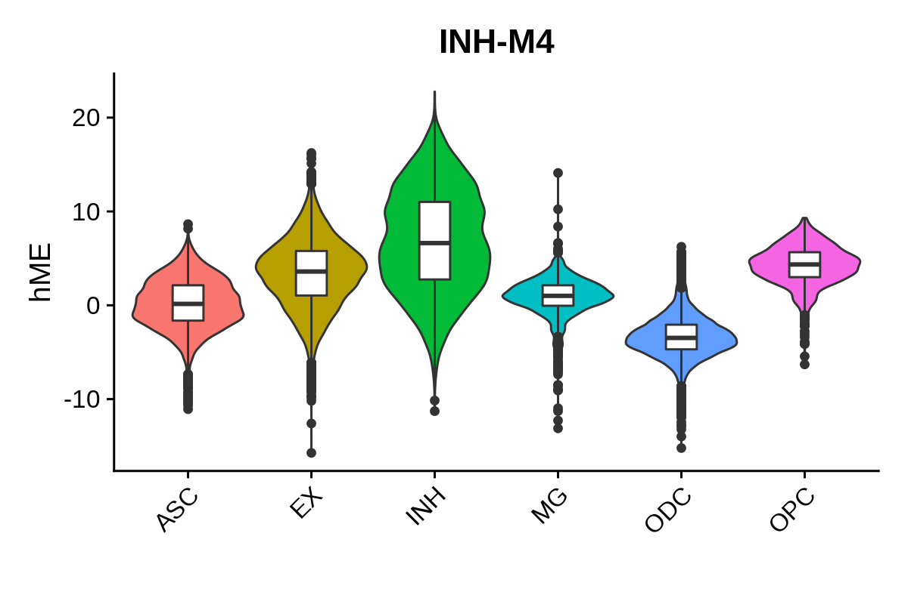